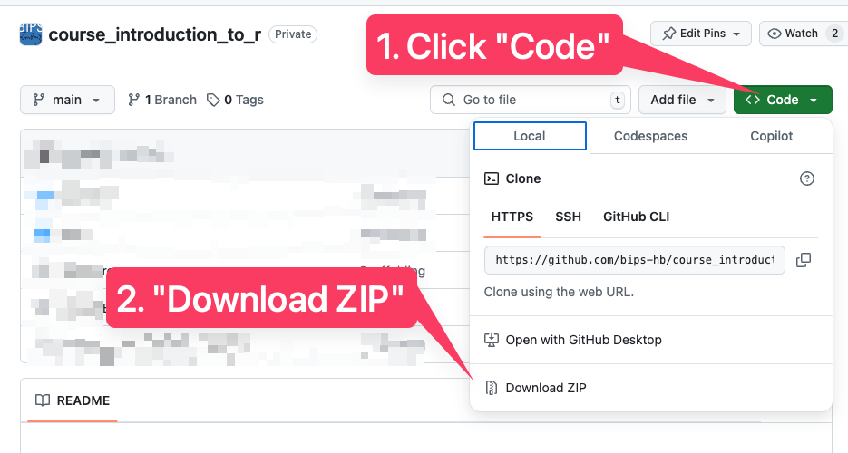
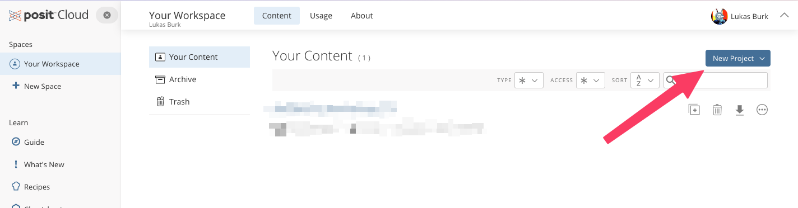
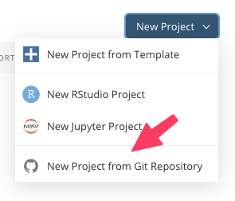
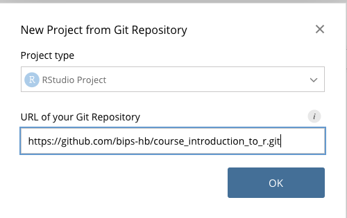

Introduction to R
Introduction to data management and data analysis with R and RStudio.
Outline
The course is grouped into (potentially overlapping) sections which do not necessarily need to correspond to workshop days.
The sections are:
1. Getting started
- Setting up R and RStudio and getting familiar with RStudio as an environment
- Basic R syntax and common language features such as the included help system
- Essential data types and data structures
- Familiarization with example datasets used throughout the course
- Using Quarto as the environment for code examples and exercises
2. Exploratory data analysis
- Creating and manipulating tabular data with the tidyverse
- Preparing for typical data cleaning tasks
- Data visualization basics using ggplot2
- Descriptive statistics to understand one’s data
- Assess data integrity
- Paving the way for publication-ready tables and visualizations using extension packages
3. Statistical analysis
- Basic hypothesis testing for common research questions
Prerequisites
Ideally R and RStudio are already installed at the start of the course. See these instructions for example.
If a local setup is not feasible, consider using an online service such as Posit Cloud (see below).
How to use this repository
Depending on your setup, you can either work with these materials locally on your own computer or in the browser on a cloud service, Posit Cloud.
Installing the required packages is part of the course, but if you want to be safe and install them in advance (e.g. due to technical issues like an unstable internet connection) follow these instructions depending on your preferences / needs and afterwards refer to scripts/install-packages.R and run the commands to install the R packages.
Locally with R / RStudio installed
Click to show instructions
- On the GitHub page, click the green “Code” button and choose “Download ZIP”
- Extract the downloaded ZIP file
- Double-click
course_introduction_to_r.Rproj

Using posit.cloud
Click to show instructions
Log in on https://posit.cloud using whichever method you prefer (it’s free!)
Choose “New Project”

Choose “New project from Git repository”

For the URL, enter https://github.com/bips-hb/course_introduction_to_r.git

Additional materials
Introductory courses
Materials here are in part inspired by the great work other people have already done and kindly shared with the community!
- R Crash Course (based on a Software Carpentry course)
- The R Workshop by Rebecca L. Barter
Books
- R for Data Science by Hadley Wickham et al.
- Advanced R by Hadley Wickham
- What They Forgot to Teach You About R by Jennifer Bryan et al.
- The R Graphics Cookbook by Winston Chang.